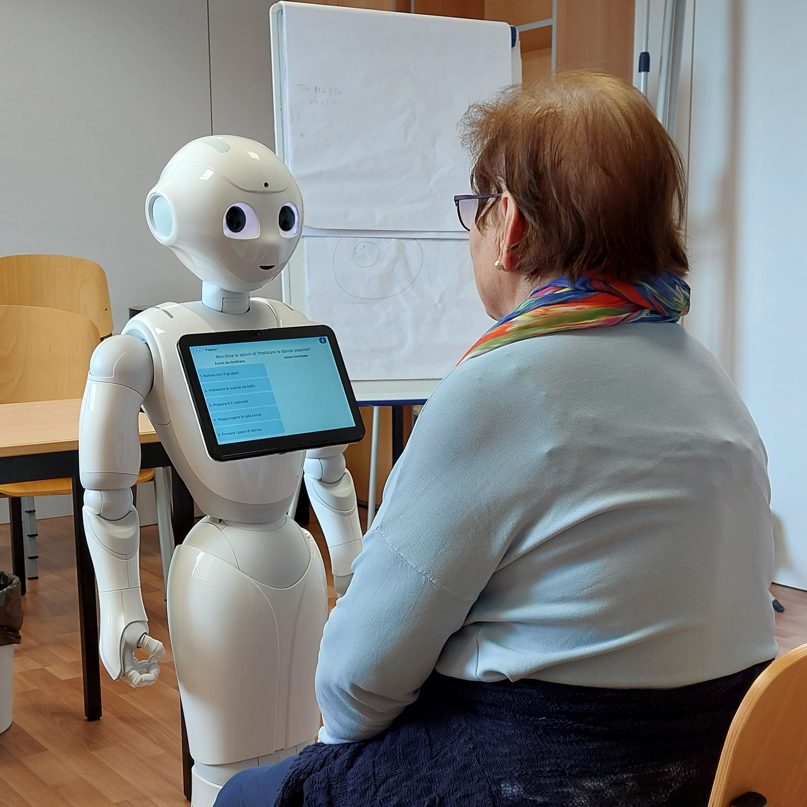

REMIND è una web application progettata per utenti over 65 affetti da Mild Cognitive Impairment (MCI), finalizzata alla raccolta di memorie personali e alla loro integrazione in serious games per l’allenamento cognitivo.
Nasce con l’obiettivo di supportare l’allenamento cognitivo di persone over 65 con MCI, attraverso la raccolta di ricordi personali e la loro trasformazione in esperienze interattive mediate da un robot umanoide.
Tipografia chiara, alto contrasto e dimensioni adeguate per utenti senior.
Flussi lineari e guidati per ridurre incertezza e frizione.
Interfacce essenziali con poche azioni per schermata.
Stati del sistema sempre visibili e comprensibili.
Il progetto è iniziato con interviste e analisi degli utenti over 65, per comprendere bisogni, limiti e difficoltà nell’interazione digitale.
Questo ha permesso di definire flussi semplici, accessibili e adatti a utenti con ridotta familiarità digitale.
La seconda fase ha visto lo sviluppo di un’app Android su robot umanoide, La seconda fase ha visto lo sviluppo di un’applicazione Android su robot umanoide, composta da quattro serious games per l’allenamento cognitivo.
I contenuti venivano generati a partire dai ricordi degli utenti, utilizzando modelli di linguaggio (LLM) per creare esperienze dinamiche e personalizzate.

Il progetto ha evidenziato l’importanza di progettare con e per gli utenti, soprattutto in contesti delicati come quello della salute cognitiva.
L’esperienza mi ha permesso di consolidare competenze in UX design, accessibilità e progettazione di esperienze digitali inclusive.